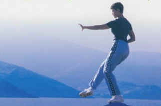
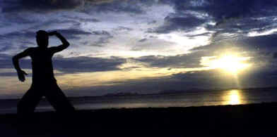

|
|
|
 Doing tai chi on a peak of a mountain
 doing tai chi in almost total darkness more extreme tai chi photos here
What is Extreme Tai Chi?Extreme Tai chi is traditional tai that follows the ancient principles of tai chi
It is called extreme because it is difficult to do and requires much diligent training and will power to master. It is not to be confused with the watered down versions of tai in the east and west that look more like a dancing gymnastic competition than authentic traditional tai chi, as practiced by the masters. It is also called extreme tai chi because we do the form in all weather conditions. The classics say - be resilient from forces coming from the eight directions. So we go out and prove that our form has internal power and resilience by e.g. doing it whilst standing in a fast running river. If you can do this then your grounding and 'sung' must be excellent. Tai Chi Products and Institutes.Because of a number of extremely generous donations, we have been able to set up various institutes and fund various tai chi related research. Some of the results of that cutting edge research is now available for you to purchase, through our online store. See also our Tai Chi Martial Academy where we Train a generation of tai chi warriors who will fight any other form of martial arts, in hugely publicized events.
Extreme Tai Chi
|
{kind=link}